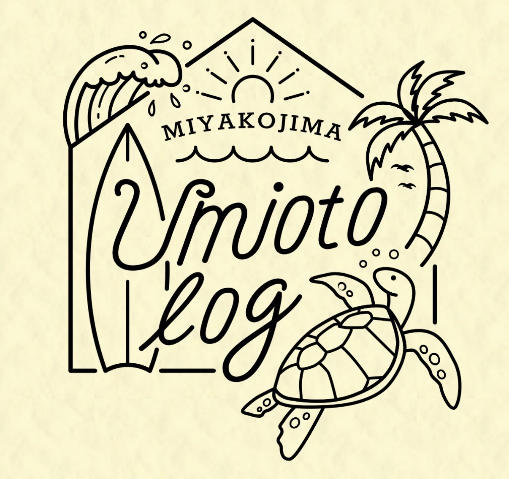
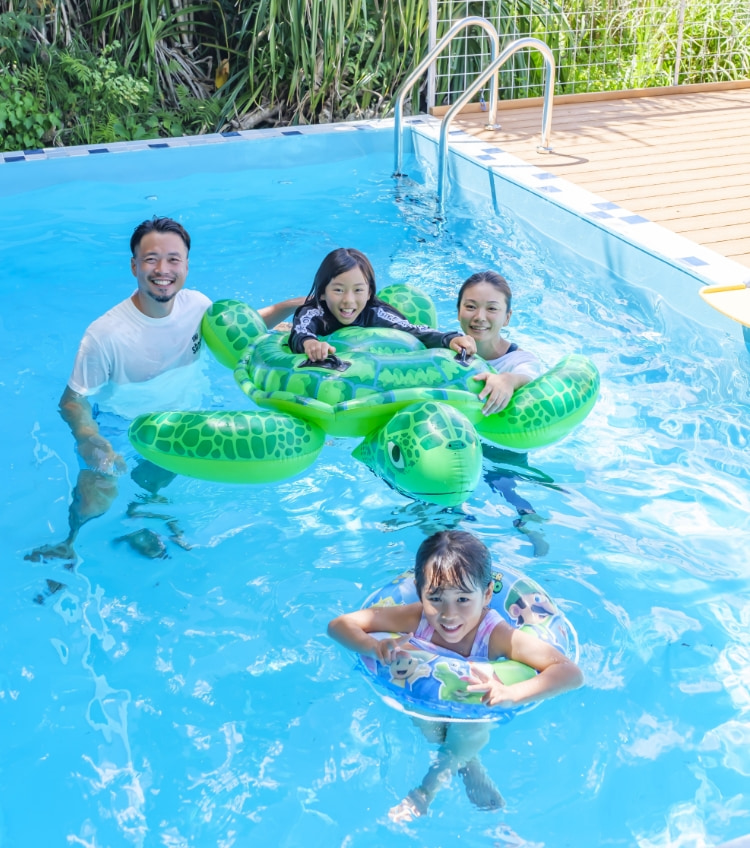
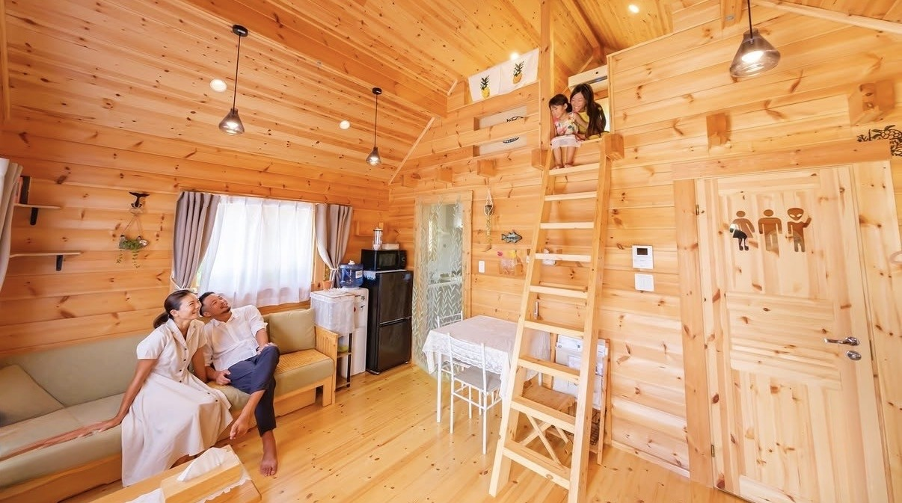
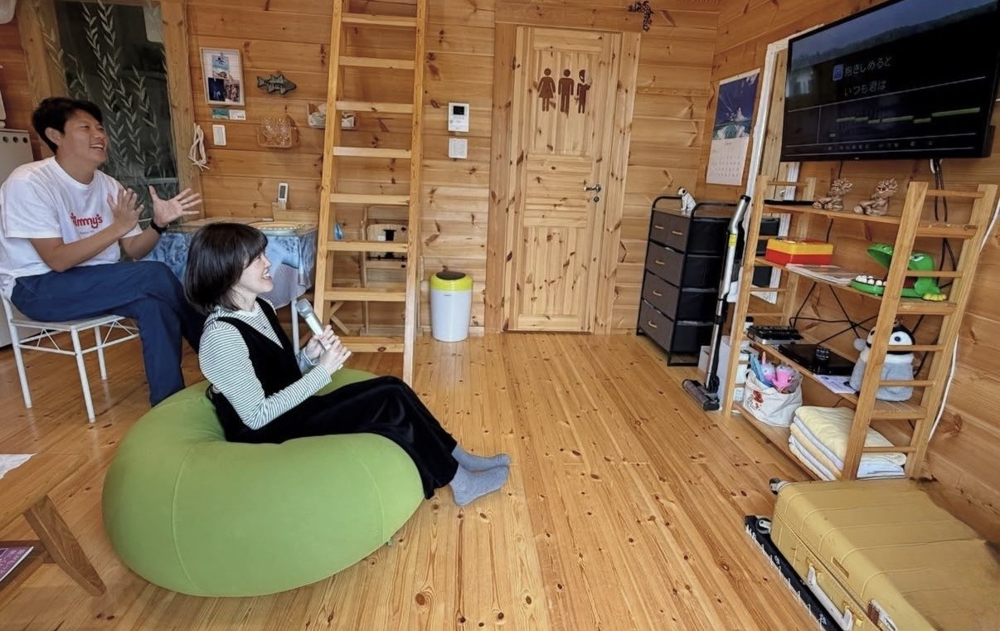
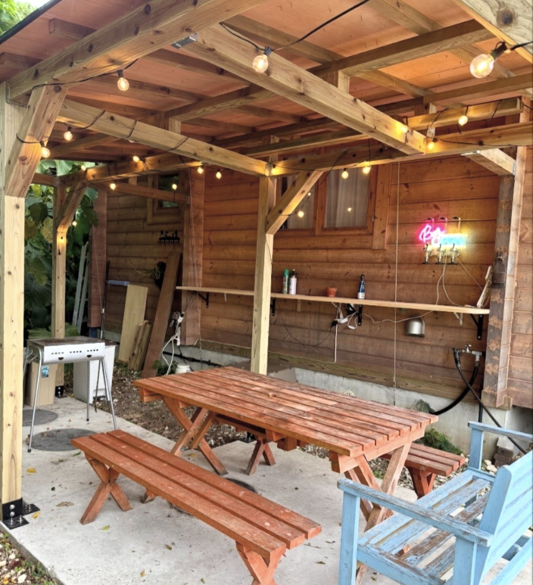
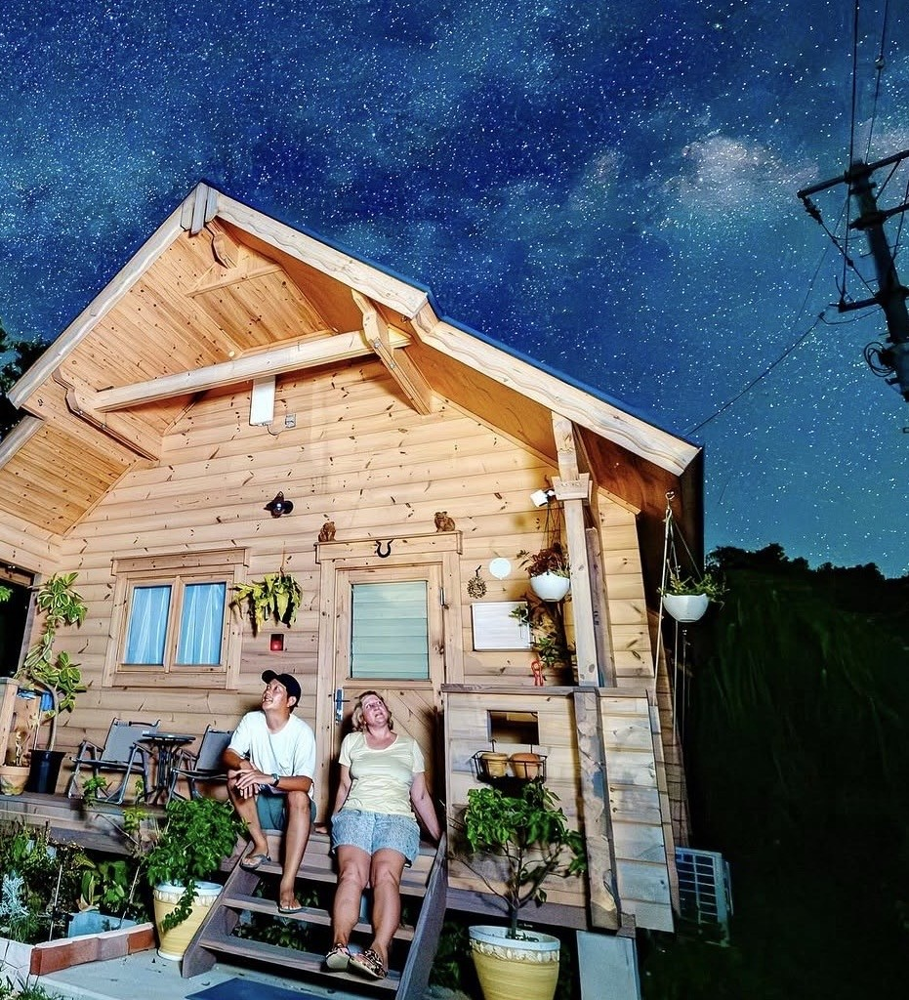
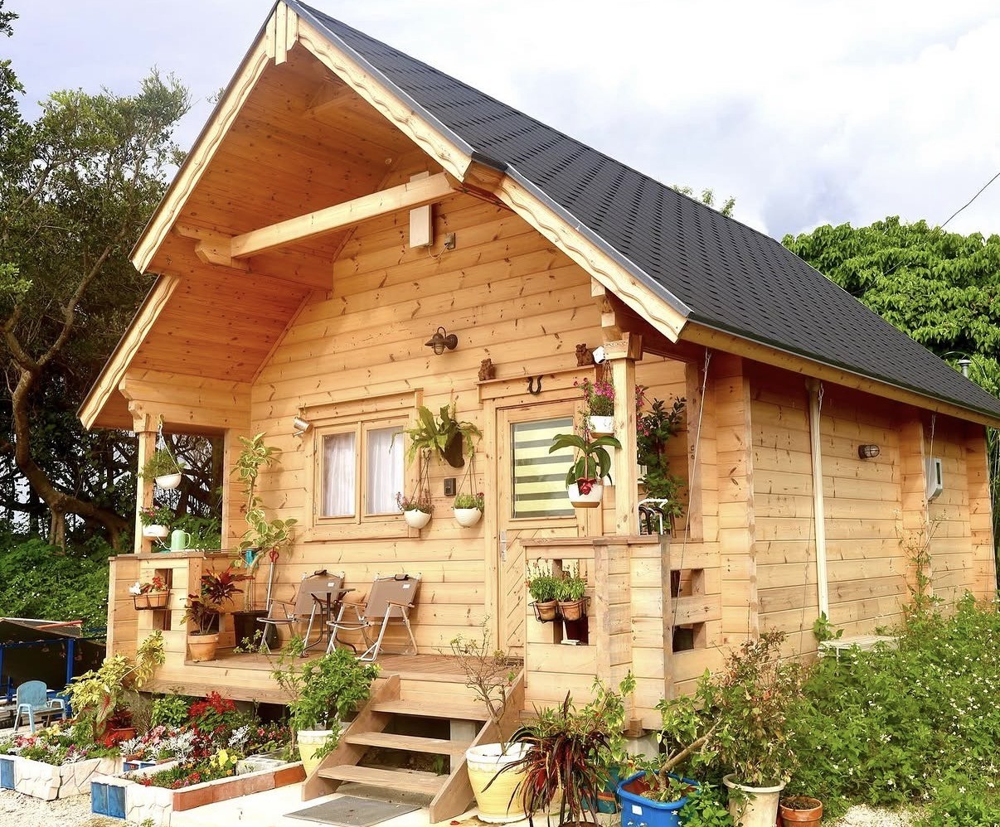

Umioto Logうみおとログ
ウミオトログ
Umioto Log is a quiet guest house surrounded by nature in Miyakojima. With ocean views, open space, and a relaxed atmosphere, it offers a peaceful escape from everyday life.
ウミオトログは、宮古島の自然に囲まれたログハウス型の宿泊施設です。 海を感じる開放的な空間の中で、 日常を離れてゆったりとした時間を過ごすことができます。
Why My Miyakojima Recommends ItMy Miyakojimaがおすすめする理由
Recommended for its quiet space, natural surroundings, and the feeling of staying close to the slower rhythm of the island.
自然に囲まれた静かな空間と、島のゆったりしたリズムを感じながら滞在できるところを大切に紹介しています。
UMIOTO log is a private log house stay that has been welcoming guests for over three years, quietly becoming a place where visitors can slow down and reconnect with nature. Surrounded by greenery and open skies, the space offers a sense of calm that feels both intimate and expansive. Designed for comfort and flexibility, the property features a heated pool that can be enjoyed throughout the seasons — whether under the summer sun or during cooler evenings. With its spacious layout, warm wooden interiors, and thoughtful amenities, UMIOTO log is more than just a place to stay. It’s a setting for meaningful moments — from relaxed family time to small gatherings, celebrations, or simply enjoying the stillness of Miyakojima.
UMIOTO logは、オープンから約3年、訪れる人がゆったりと自然と向き合える場所として親しまれてきた一棟貸しのログハウスです。 緑に囲まれた開放的な空間の中で、静かで落ち着いた時間を過ごすことができます。施設には温水プールも完備されており、季節を問わず楽しめるのも魅力のひとつです。 木の温もりを感じる広々とした空間と、快適に過ごせる設備が整っており、家族での滞在やちょっとした集まり、記念日など、さまざまなシーンに寄り添う特別な場所です。
Photos 写真






Location 場所
Address
394-32 Nagama, Gusukube, Miyakojima, Okinawa 906-0105
〒906-0105
沖縄県宮古島市城辺字長間394-32
Phone
080-1496-2700
電話番号：080-1496-2700
📞 Call Now 電話する 📍 Googleマップで見る Open in Google Maps 📷 Instagram インスタグラム 🌐 Website 公式サイト宮古島の事業者さまへFor Miyakojima Businesses
お店やサービスを、英語と日本語で丁寧に紹介しませんか？
My Miyakojimaでは、宮古島の事業者さま向けに、雰囲気やストーリーまで伝わる紹介ページを制作しています。観光で訪れる方にも、島に住む方にも届くように、英語と日本語の両方で掲載できます。
My Miyakojima creates curated bilingual feature pages for selected local businesses, helping visitors understand your story before they contact you.
掲載・制作の相談をするContact My Miyakojima